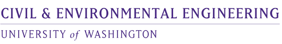
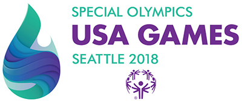

Univeristy of Washington's Department of Civil and Environmental Engineering, Seattle (WA)
Student Office Assistant (October 2021 - Present)
-
Lead the design and creation of over 100 information blog post reports, providing valuable
resources for undergraduate and graduate students to enhance their academic experience.
-
Spearhead various data entry projects, ensuring accurate and confidential management of
student academic information and departmental event and resource data.
-
Establish and maintain an efficient file organization system for the CEE team.
-
Review and process graduate school applications, ensuring compliance with departmental
requirements.

2018 Special Olympics at Federal Way Aquatic Center, Federal Way (WA)
Marketing Attendant** (June 2018 - July 2018)
-
Guided a group of volunteers in understanding how the marketing process works.
-
Regulated money transactions from customers, while tracking and recording number of purchases made.
-
Increased event merchandise and food sales by approximately 20%.
